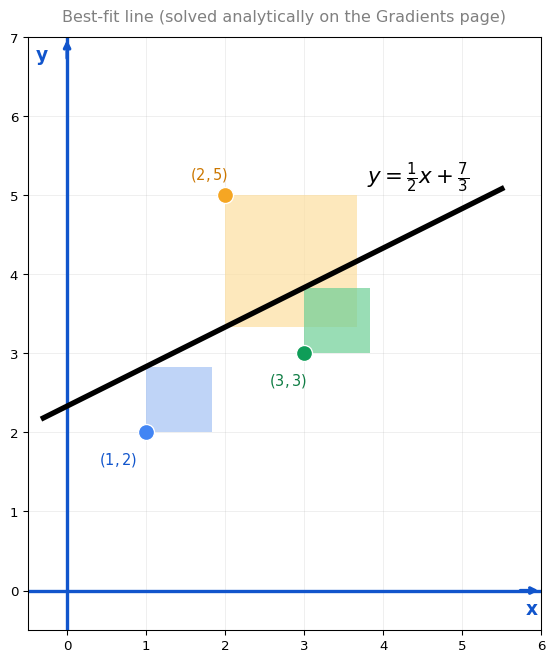

Optimization Using Gradient Descent
calculus
You may remember from the Optimization page that we solved a linear regression problem (the power lines example) analytically. We set the gradient to zero and solved a system of equations. But even with just two variables, this was cumbersome. Now let us solve the exact same problem using gradient descent, and see how much simpler it is.
The Power Lines Problem Revisited
Recall the setup from the Gradients page. Three power lines are at positions \((1, 2)\), \((2, 5)\), and \((3, 3)\). A fiber line \(y = mx + b\) must minimize the total squared connection cost:
\[ E(m, b) = (m + b - 2)^2 + (2m + b - 5)^2 + (3m + b - 3)^2 \]
Analytically, we found the best-fit line \(y = \frac{1}{2}x + \frac{7}{3}\), with minimum cost \(E = 4.167\).
With gradient descent, we do not need to solve any system of equations. We just need the gradient:
\[ \nabla E = \begin{bmatrix} \frac{\partial E}{\partial m} \\\\ \frac{\partial E}{\partial b} \end{bmatrix} = \begin{bmatrix} 28m + 12b - 42 \\\\ 12m + 6b - 20 \end{bmatrix} \]
Then we start at some random point \((m_0, b_0)\) and iterate:
\[ \begin{bmatrix} m_{k+1} \\ b_{k+1} \end{bmatrix} = \begin{bmatrix} m_k \\ b_k \end{bmatrix} - \alpha \cdot \nabla E(m_k, b_k) \]
After enough steps, we arrive at the minimum.
Connecting the Two Plots
There is a nice way to visualize what gradient descent does for linear regression.
On the left, you see the data points and the current line \(y = mx + b\). On the right, you see the cost surface, where each point on the “floor” corresponds to a pair \((m, b)\) and the height is the error \(E(m, b)\).
- A good line (small error) sits near the bottom of the cost surface.
- A bad line (large error) sits high up on the cost surface.
As gradient descent moves down the cost surface, the line fit improves. The interactive tool below animates the process step by step.
The Formal Gradient Descent Algorithm for Linear Regression
Now let us write the same idea in its most general form. Instead of 3 power lines, imagine you have \(n\) data points \((x_1, y_1), (x_2, y_2), \ldots, (x_n, y_n)\), and you want to find the line \(y = mx_N + b_N\) that best fits them. This is the same update rule you have been using, just written for any number of points.
The loss function measures how far the line is from all the data points:
\[ \mathscr{L}(m, b) = \frac{1}{2n} \left[ (mx_1 + b - y_1)^2 + \cdots + (mx_n + b - y_n)^2 \right] \]
The gradient descent update rule iterates from step \(N-1\) to step \(N\):
\[ \begin{bmatrix} m_N \\ b_N \end{bmatrix} = \begin{bmatrix} m_{N-1} \\ b_{N-1} \end{bmatrix} - \alpha \, \nabla \mathscr{L}(m_{N-1}, b_{N-1}) \]
where the gradient is:
\[ \nabla \mathscr{L} = \begin{bmatrix} \frac{1}{n} \sum_{i=1}^{n} (mx_i + b - y_i) \cdot x_i \\\\ \frac{1}{n} \sum_{i=1}^{n} (mx_i + b - y_i) \end{bmatrix} \]
The algorithm:
- Start with some random \((m_0, b_0)\). This gives a random line that probably does not fit the data well.
- Compute the gradient \(\nabla \mathscr{L}(m_0, b_0)\).
- Update to get \((m_1, b_1)\), which gives a slightly better line.
- Repeat \(N\) times until the line fits well (that is, until the steps become negligibly small).
Note
This is exactly how linear regression is trained in machine learning. Instead of solving a system of equations (which is expensive for millions of parameters), you iterate the gradient descent formula. It scales to any number of data points and any number of parameters.
Previous: Gradient Descent in Multiple Variables